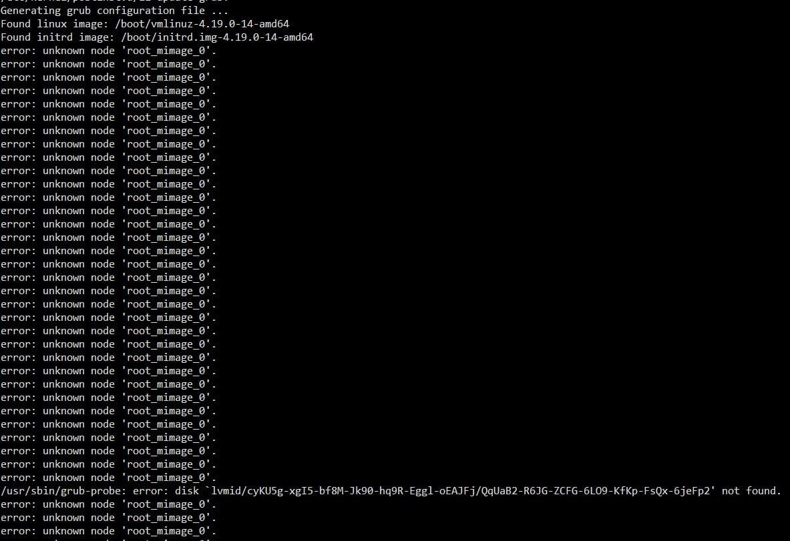

class: center, middle # Troubleshooting in USTCLUG ### Case studies Keyu Tao --- # 目录 1. Docker, macvlan and Linux 2. LVM and lvmcache and GRUB --- # "Docker2" 背景： - 一台运行了很多容器的机器（虚拟机），Debian 9。 - 各个容器以 macvlan 的形式接入内网，分配到不同的 IP。 - 网关使用这些容器的内网地址与容器通信。 --- # 什么是 macvlan？ > Some applications, especially legacy applications or applications which monitor network traffic, expect to be directly connected to the physical network. In this type of situation, you can use the macvlan network driver to assign a MAC address to each container’s virtual network interface, making it appear to be a physical network interface directly connected to the physical network. <https://docs.docker.com/network/macvlan/> TL;DR: - 每个容器有不同的 MAC 地址。 - 在网络包来到物理设备时，macvlan 需要将数据包根据 MAC 地址给对应的容器。 - Why macvlan? 需要让每个容器有一个内网地址，并且地址可以被内网的其他机器访问。 - 其实 ipvlan 也行。 --- # Macvlan 图例  --- # 问题 2020/4: @iBug runs `apt upgrade`。 之后奇怪的事情发生了： - 其他机器可以与 docker2 顺利连接，但是无法连接到 docker2 上的容器。 - 但是，如果容器里去 ping 外面的机器，对应的机器就能够连接这个容器。 起初怀疑是 tinc 的问题，但是之后排查毫无收获。 --- # 简单粗暴的 workaround 既然如果容器里 ping 外部的机器，对应的机器就能双向连通容器…… 那么搞一个 crontab/systemd-timer，或者一直 ping 就行了？ --- # "pingd" version 1 ```ini [Unit] Description=Docker pingd service %I Documentation=man:ping(8) After=network.target StartLimitIntervalSec=0 [Service] Type=simple User=root Group=root ExecStart=/bin/sh -c 'IVAR="%i"; exec /usr/bin/docker exec "$${IVAR%:*}" ping -q -s 32 "$${IVAR#*:}"' ExecStop=/bin/kill -s INT $MAINPID Restart=on-failure RestartSec=3 [Install] WantedBy=multi-user.target Alias=docker-ping@.service ``` ```console systemctl enable docker-pingd@container:host.service ``` --- # "pingd" version 2 docker-ping@.timer: ```ini [Unit] Description=Docker pingd timer %I Documentation=man:ping(8) After=network.target StartLimitIntervalSec=0 [Timer] OnCalendar=*:0/10 RandomizedDelaySec=60s Persistent=true Unit=docker-ping@.service [Install] WantedBy=timer.target ``` --- # "pingd" version 2 docker-ping@.service: ```ini [Unit] Description=Docker ping service (oneshot) %I Documentation=man:ping(8) After=network.target StartLimitIntervalSec=0 [Service] Type=simple User=root Group=root ExecStart=/bin/sh -c 'IVAR="%i"; exec /usr/bin/docker exec "$${IVAR%:*}" ping -q -s 32 -c 8 "$${IVAR#*:}"' Restart=on-failure RestartSec=3 [Install] WantedBy=multi-user.target ``` --- # macvlan? - 数据包根据 MAC 地址被分配到不同的容器…… - ARP 包？ - `arping` 机器 A：没有配置 "pingd"。 - 机器 A 与 docker2 可以正常互相 `arping`。 - 机器 A 不能 `arping` 到容器（即使能够双向连通），反方向是可以的。 - 如果在容器里开启 `tcpdump`，那么 `arping` 就很正常。 - `tcpdump` 会开启混杂模式。 ~~Workaround: 一直开着混杂模式~~ 合理怀疑：是不是 kernel 出了什么问题？ --- # Debian bugs Google: `macvlan site:bugs.debian.org` [\#952660 - src:linux: macvlan multicast/broadcast regression in stretch](https://bugs.debian.org/cgi-bin/bugreport.cgi?bug=952660) 2020/02 的 bug： ``` Linux 4.9.209 included: macvlan: do not assume mac_header is set in macvlan_broadcast() which fixed some TX cases but broke the RX case. When handling a received multicast or broadcast packet, macvlan_broadcast() now reads the destination address from the wrong place. The packets may then fail to match the multicast filters that they should. This is fixed in 4.9.211 by: macvlan: use skb_reset_mac_header() in macvlan_queue_xmit() This is a major regression for VM hosts using macvlan/macvtap as ARP and IPv6 neighbour discovery became quite unreliable. ``` --- # Problem Solved `apt upgrade` 升级内核，然后 `reboot`。 教训： - 生产环境的 Debian 服务器务必安装 `apt-listbugs`！ - Kernel 并不一定可靠，Debian oldstable 的更新也不一定不会 break 掉东西。更新之后遇到奇怪的问题，就先「滚回到之前的版本」。 - 计网知识很重要。 --- # Mirrors & lvmcache 去年，我们获得了一台新的镜像站服务器，用于改善老机器糟糕的 IO 性能： - ZFS 性能（在旧服务器上）有点儿问题 -> 换 LVM + XFS 方案。 - LVM 概念光速入门: PV (物理设备), VG (物理设备组成的集合), LV (在 VG 上的虚拟卷)。 - SSD 加速 HDD: `lvmcache(7)` - `lvmcache` 基于 `dm-cache`。 --- # `lvmcache` 设置 缓存数据盘、元数据盘分离。 创建缓存池： ```console lvconvert --type cache-pool --poolmetadata ssd/mcache_meta --cachemode writethrough -c 1M ssd/mcache ``` 设置缓存： ```console lvconvert --type cache --cachepool lug/mcache lug/repo ``` --- # 缓存模式？ [~~这里的缓存模式采用 passthrough，即写入动作绕过缓存直接写回原设备（当然啦，写入都是由从上游同步产生的），另外两种 writeback 和 writethrough 都会写入缓存，不是我们想要的。~~](https://github.com/ustclug/documentations/commit/62d1647291e92c5213a267c48cce804f79ad50ba) passthrough 模式中，读写都会绕过 cache，唯一的作用是 write hit 会使得 cache 对应的块失效。 [~~这里使用 writeback 模式，因为仓库数据没了还能再同步，使用 writeback 提升性能更合适。~~](https://github.com/ustclug/documentations/commit/04bf5e52588717104dc7147abc42a3563fb24d0b) 出于稳定考虑，使用 writethrough 模式。（我们的 Cache 太大了，writeback 可能会弄坏不少东西，如果 metadata 坏了就更麻烦了） --- # 从 writeback 到 writethrough 转换模式，需要将 cache 中的脏数据写回磁盘。 "Cache policy": - smq: 默认的模式。 - mq: 老的算法（忽略）。 - **cleaner: 强制 cache flush 回到 LV。** 但是……在 mirrors 上更改为 cleaner 之后，cache 并没有写回。 --- # Bug? <https://bugzilla.redhat.com/show_bug.cgi?id=1668163> ``` The assumption could be - the cache chunksize is >= 1MiB and there is unspecified bigger migration_threshold and remained at defaul value 2048 (1MiB). This prevents kernel from flush blockes. There are several bugs about this. The quick workaround solution is to set higher threshold: lvchange --cachesettings migration_threshold=16384 vg/cacheLV ``` --- # dm-cache <https://elixir.bootlin.com/linux/latest/source/drivers/md/dm-cache-target.c#L1649> ```c static enum busy spare_migration_bandwidth(struct cache *cache) { bool idle = iot_idle_for(&cache->tracker, HZ); sector_t current_volume = (atomic_read(&cache->nr_io_migrations) + 1) * cache->sectors_per_block; if (idle && current_volume <= cache->migration_threshold) return IDLE; else return BUSY; } ``` --- # Workaround ```sh # dirty hack sudo lvchange --cachepolicy cleaner lug/repo for i in `seq 1 1500`; do sudo lvchange --cachesettings migration_threshold=2113536 lug/repo && \ sudo lvchange --cachesettings migration_threshold=16384 && \ echo $i && sleep 15; done; # 需要确认没有脏块。如果还有的话继续执行（次数调小一些） # 如果是从 writeback 切换，需要先把模式切到 writethrough # 然后再修改 cachepolicy 到 smq sudo lvchange --cachepolicy smq lug/repo ``` --- # GRUB? 2021/03/26:「OpenSSL 项目修复了一个高危漏洞 CVE-2021-3450」 @taoky: 同学们，又到了 CVE 的季节。 @iBug: `apt upgrade` -> 发现新 mirrors 机器的 GRUB 更新挂了。 </img> --- # 处理过程 - 搜 bug: 啥都没搜到 - 降级: 没用 - 最近没有修改过 LVM 相关配置 - 这个错误是从哪里来的？ --- # Let's code search! <https://codesearch.debian.net/> <https://codesearch.debian.net/search?q=unknown+node+%27&literal=1> <https://sources.debian.org/src/grub2/2.04-17/grub-core/disk/diskfilter.c/?hl=522#L522> <https://sources.debian.org/src/grub2/2.04-17/grub-core/disk/diskfilter.c/?hl=485#L485> --- # 调试与复现问题 有没有什么命令可以简单复现这个问题？ - GRUB 每次更新之后，都需要执行 `/usr/sbin/grub-mkconfig` 生成一下配置。 - `grub-mkconfig` 其实是个 Shell 脚本。 - `set -x` - `grub-mkconfig` 调用了一些外部命令： - `grub-probe` - `grub-file` - `grub-editenv` - `grub-script-check` 如果有无副作用 + 能复现 bug 的命令就很好了！ ```console sudo grub-probe --verbose --device /dev/mapper/lug-root --target=fs_uuid ``` ```console grub-probe: error: disk `lvmid/<redacted>/<redacted>' not found. ``` grub-probe: probe device information for GRUB --- # Compile and GDB ``` CFLAGS="-g" ``` 在两个位置设置断点，run，用 `print` 查看变量信息，调试。 --- # LVM metadata 纯文本，在 VG 中每个 PV 的头部放着。 `vgcfgbackup` 查看。[例子](https://gist.github.com/taoky/e1e046a4301983e872bce6e99b0ca115) 重点关注 LV 部分。 --- ```lvm lvmirror { id = "8hdui8-GZGs-2wG6-ayeO-BQo4-z1kM-0fvhvg" status = ["READ", "WRITE", "VISIBLE"] flags = [] creation_time = 1618074879 # 2021-04-11 01:14:39 +0800 creation_host = "taoky-debianvm" segment_count = 1 segment1 { start_extent = 0 extent_count = 13 # 52 Megabytes type = "mirror" mirror_count = 2 mirror_log = "lvmirror_mlog" region_size = 4096 mirrors = [ "lvmirror_mimage_0", 0, "lvmirror_mimage_1", 0 ] } } ``` --- # GRUB lvm.c [`grub_lvm_detect()`](https://sources.debian.org/src/grub2/2.04-17/grub-core/disk/lvm.c/?hl=100#L100)。先解析 PV 信息，再[解析 LV 信息](https://sources.debian.org/src/grub2/2.04-17/grub-core/disk/lvm.c/?hl=397#L397)。 循环中： - `p` 指向 metadata 字符串，这个 pointer 会根据解析的进度移动。 - GRUB 尝试解析自己认识的 LV segment 类型。在 segment 循环开始，会跳到 `segment` 这个字符串处 (`p = grub_strstr (p, "segment");`) - GRUB 会跳过自己不认识的 LV segment。 - GRUB 不认识 lvmcache metapool。 - 如何跳过？ - （基本上）什么都不干（**不改变 `p` 的位置**），设置 `skip_lv = 1;` - 一个 LV 的所有 segment 解析完成之后： - **扫描让 `p` 指向下一个 `}` (`p = grub_strchr (p, '}');`)** - `p += 3`（以便让 `p` 离开这个 LV 块） - 继续循环。 - **如果这个不认识的 segment 里面有 `}` 会怎么样？** --- # Policy settings??? ```lvm mcache { id = "BJvm0E-9uCj-Ji6a-N37P-nEuL-evA4-ZDUxdt" status = ["READ", "WRITE"] flags = [] creation_time = 1594104910 # 2020-07-07 14:55:10 +0800 creation_host = "mirrors4" segment_count = 1 segment1 { start_extent = 0 extent_count = 393216 # 1.5 Terabytes type = "cache-pool+METADATA_FORMAT" data = "mcache_cdata" metadata = "mcache_cmeta" chunk_size = 2048 metadata_format = 2 cache_mode = "writethrough" policy = "smq" policy_settings { migration_threshold=16384 } } } ``` --- # Why it hurts? Mirrors 的情况： - Rootfs 是 mirror type 的。指向的两个 lv 的信息在 mcache 后面。 - GRUB 没有解析这两个 lv 的信息，于是它们有 node，但是 node 类型既不是 pv，也不是 lv。 - `validate_node()` 失败，boom! - 结果：安装、创建配置、启动都会失败。 --- # Fix 简单粗暴：如果遇到不认识的 segment，确保里面的字符已经全部遍历完了再继续。 <https://github.com/taoky/grub/commit/c173a3cb7566230093a24c0a1f31aa032678f1f7> 基于 Debian GRUB 的 Buster 分支改代码，重新编译包。 ```sh gbp clone --pristine-tar https://github.com/taoky/grub.git apt build-dep grub2 dch --local taoky dpkg-buildpackage -b -rfakeroot -us -uc ``` *第一次尝试打 Debian 包，所以可能有些命令不太对。* Bug reports: <https://bugs.debian.org/cgi-bin/bugreport.cgi?bug=985974> <https://savannah.gnu.org/bugs/?60385> *虽然没有人理我。* --- # 教训 - 搜索（Debian codesearch 真好用！）、阅读、调试源代码的能力非常重要。 - 知名的开源软件，也可能在某些 corner case 上翻车。 - 越复杂的系统，出现 bug 的可能性越大。